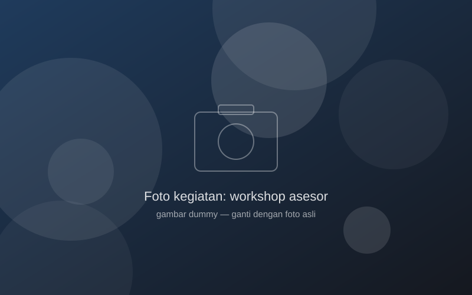
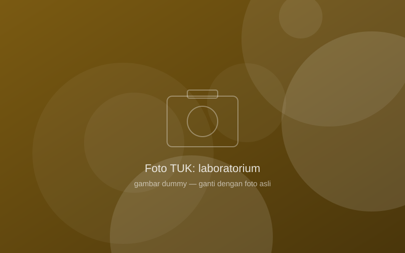
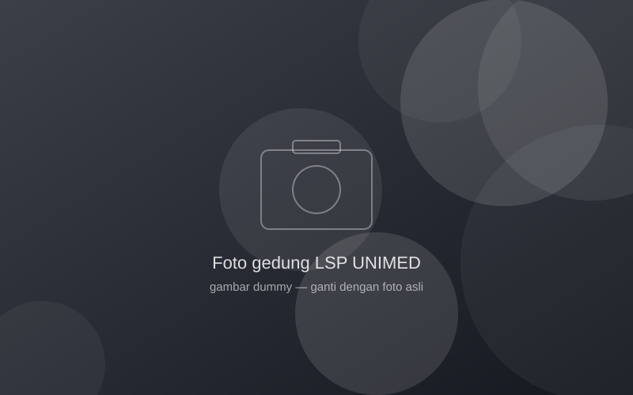

Tentang LSP UNIMED
Lembaga sertifikasi pihak kesatu yang memastikan kompetensi mahasiswa dan alumni UNIMED diakui dunia kerja.
Siapa kami
LSP Universitas Negeri Medan adalah Lembaga Sertifikasi Profesi Pihak Kesatu (P1) yang dibentuk universitas dan dilisensi oleh Badan Nasional Sertifikasi Profesi (BNSP). LSP melaksanakan sertifikasi kompetensi bagi mahasiswa dan alumni UNIMED berdasarkan skema yang disusun bersama program studi dan mengacu pada standar kompetensi kerja nasional.
Uji kompetensi diselenggarakan di Tempat Uji Kompetensi (TUK) yang berada di laboratorium dan bengkel fakultas, dan dilaksanakan oleh asesor kompetensi yang teregistrasi di BNSP.
Visi
Menjadi lembaga sertifikasi profesi yang terpercaya dan diakui secara nasional dalam menjamin kompetensi lulusan Universitas Negeri Medan.
Misi
- Menyelenggarakan sertifikasi kompetensi yang profesional, objektif, transparan, dan mampu telusur sesuai pedoman BNSP.
- Mengembangkan skema sertifikasi bersama program studi sesuai kebutuhan dunia kerja.
- Menyiapkan asesor dan tempat uji kompetensi yang memenuhi persyaratan.
- Membangun kerja sama dengan industri, asosiasi profesi, dan pemangku kepentingan.
Kebijakan mutu
LSP UNIMED berkomitmen memberikan pelayanan sertifikasi yang adil, tidak memihak, dan menjaga kerahasiaan peserta, dengan menerapkan sistem manajemen mutu sesuai PBNSP 201, PBNSP 202, PBNSP 206, dan ISO/IEC 17024:2012 secara berkelanjutan.
Struktur organisasi
Nama pejabat pada bagan berikut adalah contoh. Ganti dengan SK pengangkatan pengurus LSP yang berlaku.
Lisensi BNSP
- Nomor lisensi
- BNSP-LSP-1928-ID
- Nomor SK
- KEP.0650/BNSP/IV/2021
- Jenis
- LSP Pihak Kesatu (P1)
- Ruang lingkup
- 16 skema sertifikasi (lihat halaman skema)
Data lisensi resmi dapat dilihat di laman BNSP — LSP UNIMED.
Galeri


